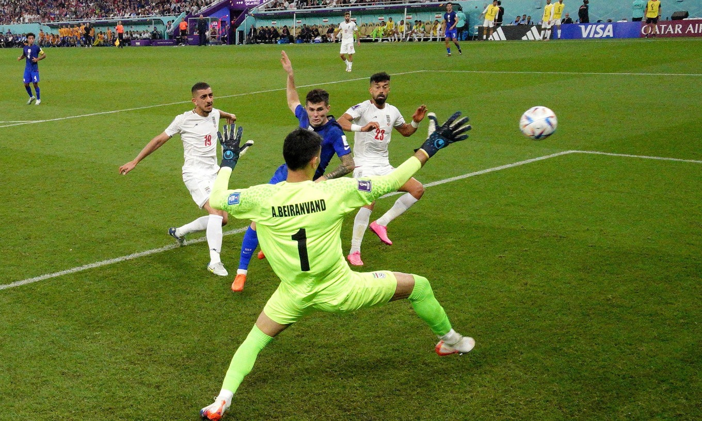
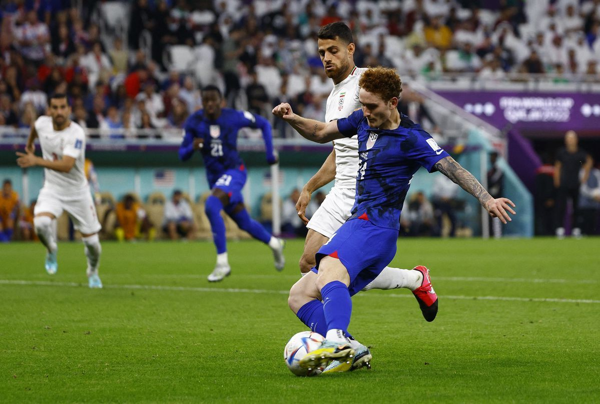

QATAR - Thắng 1-0 nhờ pha làm bàn của Christian Pulisic tối 29/11, Mỹ giành vé còn lại ở bảng B vào vòng 1/8 World Cup 2022.
Bàn duy nhất trận đấu được thực hiện ở phút 38, khi Weston McKennie - cầu thủ đang khoác áo Juventus - bấm bóng cho Sergino Dest băng xuống bên cánh phải. Dest đánh đầu chuyền vào vòng cấm để Christian Pulisic băng cắt đệm cận thành tung lưới Alireza Beiranvand.
Ở trận ra quân hòa Xứ Wales 1-1, Pulisic cũng tỏa sáng với pha kiến tạo cho Timothy Weah - con trai huyền thoại George Weah - mở tỷ số. Pulisic nhờ đó trở thành là cầu thủ Mỹ đầu tiên góp dấu giày vào hai bàn thắng liên tiếp của đội tuyển tại World Cup, kể từ khi Landon Donovan ghi hai bàn vào lưới Algeria và Ghana tại Nam Phi 2010.
Phong độ cao của Pulisic giúp Mỹ cán đích nhì bảng, sau Anh, và sẽ đụng Hà Lan - đội nhất bảng A - ở vòng 1/8. Trận đấu này sẽ diễn ra lúc 22h30 ngày 3/12 giờ Hà Nội, trên sân Khalifa, Doha.

Pulisic trong pha làm bàn hạ Beiranvand ở phút 38 trận Mỹ thắng Iran 1-0 trên sân Al Thumana ngày 29/11. Ảnh: Reuters
Chỉ cần một điểm để đi tiếp nên trên sân Al Thumana, Iran chủ động phòng ngự. Trong hiệp một, đại diện châu Á cầm bóng 39%, không dứt điểm lần nào và nhường toàn bộ thế trận cho Mỹ.
Cách tiếp cận của Iran phần nào khiến Mỹ gặp khó khăn. Sau bàn mở tỷ số ở phút 38 của Pulisic, phải đến phút bù thứ sáu, Mỹ mới lần thứ hai đưa bóng vào lưới Iran. McKennie chọc khe để Weah xâm nhập vòng cấm dứt điểm chéo góc hạ Beiranvand. Nhưng bàn thắng không được công nhận, do Weah đã việt vị.

Josh Sargent (số 24) trong một lần dứt điểm sau khi vượt qua hàng thủ Iran. Đội bóng châu Á dồn toàn lực phòng ngự trong hiệp đầu. Ảnh: Reuters
Sang hiệp hai, Iran buộc phải đẩy cao đội hình để tìm bàn gỡ. Phút 52, từ quả tạt bên cánh phải, tiền đạo vào thay người Ghoddos đánh đầu cự ly gần vọt xà. Đây là cú dứt điểm đầu tiên từ đầu trận của Iran. Hơn mười phút sau, Ghoddos tiếp tục lỡ cơ hội khi đặt lòng chệch cột.
Kể từ tình huống này, Mỹ bắt đầu chú trọng phòng ngự, khiến Iran cầm nhiều bóng nhưng hiếm khi có thêm cơ hội dứt điểm. Đến phút bù giờ thứ ba, họ mới lại tiếp cận được khung thành của Mỹ. Từ quả đá phạt bên cánh trái, trung vệ Morteza Pouraliganji cúi người đánh đầu đưa bóng đi sạt cột. Đến phút bù thứ 9, Ali Karimi thoát xuống đón đường đánh đầu chuyền của đồng đội rồi ngã trong vòng cấm dưới tác động của cầu thủ Mỹ. Karimi đòi phạt đền, nhưng sau khi nghe tư vấn từ VAR, trọng tài chính Antonio Mateu đã khước từ. Sau tình huống này, trọng tài Tây Ban Nha đã thổi hồi còi mãn cuộc.
Thất bại 0-1 khiến Iran mất vị trí nhì bảng vào chính tay Mỹ, và trở thành đại diện châu Á thứ hai chia tay World Cup 2022, sau chủ nhà Qatar. Trái lại, Mỹ đi tiếp nhưng cũng chịu tổn thất không nhỏ khi Pulisic và McKennie đều rời sân vì chấn thương.
Đội hình thi đấu
Iran: Beiranvand; Rezaeian, M Hosseini, Pouraliganji, Mohammadi (Karimi 45); Gholizadeh (Ansarifard 77), Nourollahi (Torabi 71), Afagh, Hajsafi (Borani 71); Taremi, Azmoun (Ghoddos 46).
Mỹ: Turner; Dest (Zimmerman 82), Carter-Vickers, Ream, Robinson; Adams, Musah, McKennie (Acosta 65); Pulisic (Aaronson 46), Weah (Moore 82), Sargent (Wright 77).